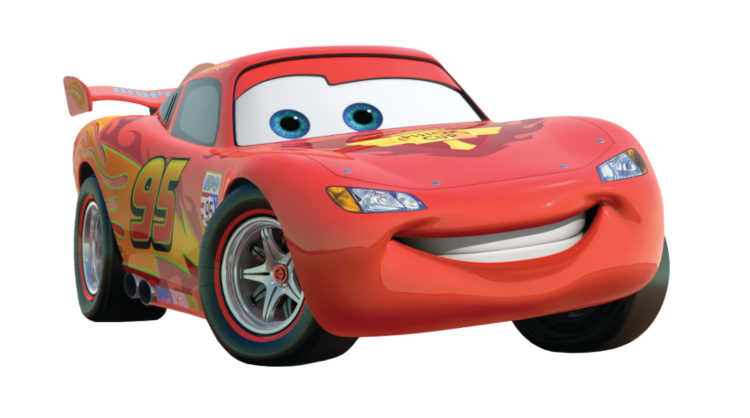

Lightning McQueen
Montgomery "Lightning" McQueen is a fictional anthropomorphic stock car who is the protagonist of the animated Pixar film series, Cars, including Cars, Cars 2, and Cars 3. He also appears in the Cars Toons TV series